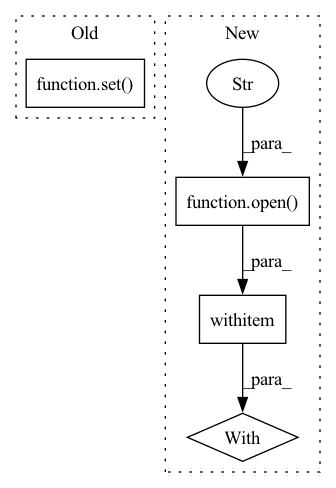

Pattern ID :4315
Before Change
if args.remove_with_heuristics:
all_input_columns = " ".join([o[c] for c in args.input_columns])
input_special_tokens = set(re.findall("[A-Za-z:_.]+_[0-9]", all_input_columns))
output_special_tokens = set( re.findall("[A-Za-z:_.]+_[0-9]", o[args.thingtalk_column]))
if not is_subset(output_special_tokens, input_special_tokens) :
heuristic_count += 1
continue
_, quote_values = remove_thingtalk_quotes(o[args.thingtalk_column])After Change
if args.thrown_away is not None:
// write the thrown away exampels into a file
with open (args.thrown_away, "w") as output_file:
for o in all_thrown_away_rows:
output_row = ""
for i, column in enumerate(args.output_columns):
output_row += o[column]In pattern: SUPERPATTERN
Frequency: 3
Non-data size: 4
Instances Fragment ID: 15818864
Project Name: stanford-oval/genienlp
Commit Name: d2eacd4e5c5347cb45907aea9e0a81a54b9fd5bf
Time: 2020-05-26
Author: s.j.semnani@gmail.com
File Name: genienlp/paraphrase/scripts/transform_dataset.py
M Class Name: AnonimousClass
N Class Name: AnonimousClass
M Method Name: main(0)
N Method Name: main(0)
M Parent Class:
N Parent Class:
M File Name: genienlp/paraphrase/scripts/transform_dataset.py
N File Name: genienlp/paraphrase/scripts/transform_dataset.py
M Start Line: 55
M End Line: 162
N Start Line: 31
N End Line: 196
Before Change
class IndicatorCollectorPipeline:
def __init__(self):
self.ids_seen = set()
def process_item(self, item, spider):
indicators.append(item)
After Change
self.items_dict = defaultdict()
try:
with open (r"items.pickle", "rb") as output_file:
self.prev_items = pickle.load(output_file)
except (OSError, IOError):
with open(r"items.pickle", "wb") as output_file:
pickle.dump({}, output_file) Fragment ID: 15818859
Project Name: radoslawkrolikowski/financial-market-data-analysis
Commit Name: 00f584045cdbb48c22007e66bd89ccbb5b6a1163
Time: 2019-12-09
Author: root@localhost.localdomain
File Name: economic_indicators_spider.py
M Class Name: IndicatorCollectorPipeline
N Class Name: IndicatorCollectorPipeline
M Method Name: __init__(3)
N Method Name: __init__(1)
M Parent Class:
N Parent Class:
M File Name: economic_indicators_spider.py
N File Name: economic_indicators_spider.py
M Start Line: 92
M End Line: 93
N Start Line: 16
N End Line: 30
Before Change
concatenate_text += line + " "
concatenate_text = concatenate_text.strip()
self.vocab = list(set( concatenate_text.split()) )
for index, vocab in list(zip(range(0, len(self.vocab)), self.vocab)):
self.vocab_dict[vocab] = indexAfter Change
indices = []
data = []
vocabulary = {}
with open (self.file_name, "r") as filino:
docs = filino.readlines()
for d in docs:
for term in d.split(): Fragment ID: 15818862
Project Name: milanlproc/contextualized-topic-models
Commit Name: 06e8fbee8e3be72841f4aac15b1f43bd6821ffee
Time: 2020-07-30
Author: s.terragni4@campus.unimib.it
File Name: contextualized_topic_models/utils/data_preparation.py
M Class Name: TextHandler
N Class Name: TextHandler
M Method Name: prepare(1)
N Method Name: prepare(1)
M Parent Class:
N Parent Class:
M File Name: contextualized_topic_models/utils/data_preparation.py
N File Name: contextualized_topic_models/utils/data_preparation.py
M Start Line: 48
M End Line: 64
N Start Line: 51
N End Line: 68